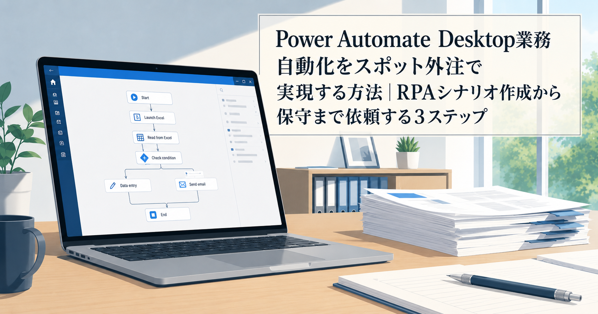
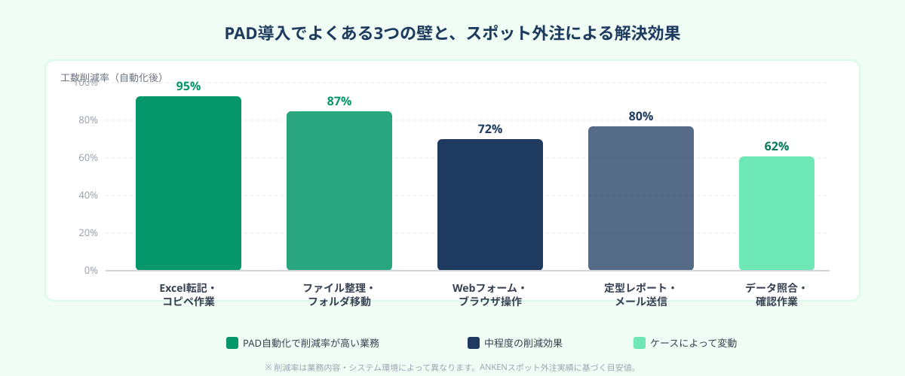
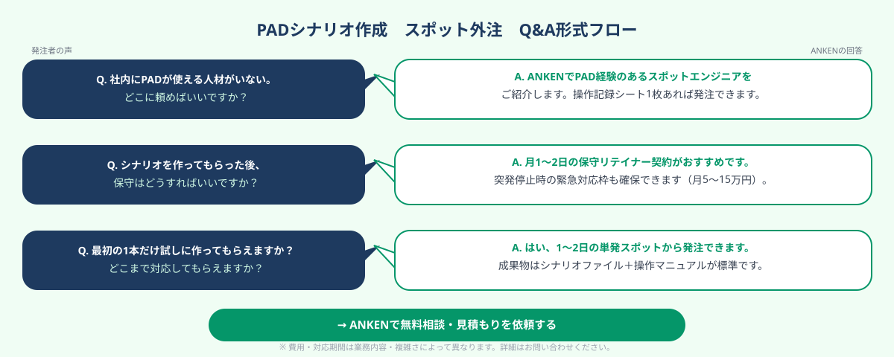

Power Automate Desktop業務自動化をスポット外注で実現する方法｜RPAシナリオ作成から保守まで依頼する3ステップ
Power Automate Desktop（PAD）で業務を自動化する最短ルートは「自動化したい業務を操作記録シートにまとめ、PAD経験のあるスポットエンジニアに依頼すること」だ。PADはWindows 10・11に無料搭載されているMicrosoftのRPAツールだが、シナリオを実際に作れる社内人材がいない企業がほとんどだ。スポット外注を使えば5〜20万円の単発費用で、Excel転記・ファイル操作・ブラウザ操作の自動化を実現できる。本記事では3ステップで解説する。
本記事は2026年8月時点の情報に基づいています。
まず相談だけでも大丈夫です。
ANKENではPower Automate Desktop・Power Automate（クラウドフロー）のシナリオ作成経験を持つスポットエンジニアをご紹介できます。「この業務を自動化できるか確認してから発注したい」という段階でもご相談を受け付けています。相談・見積もりは無料です。
無料で相談する →PAD導入でよくある3つの壁

Power Automate Desktopは、MicrosoftがWindows 10・11ユーザー向けに無料提供しているRPAツールだ。GUI操作を「フロー」として記録・再生するだけでルーティン業務を自動化できるため、理論上はプログラミング知識なしでも使える。しかし、実際に企業が導入しようとすると以下3つの壁にぶつかる。
① 「誰が作るのか」問題：社内に担当者がいない
PADはローコードツールだが、実務で使えるシナリオを作るにはフロー設計・変数管理・エラー処理の基礎知識が必要だ。「Excelが得意な総務担当者」に任せたものの挫折するケースが多く、結局誰も触れないままライセンスだけ確保している状態になりがちだ。
② 「最初の1本」が最も難しい
PADの公式ドキュメントやYouTube動画で概念は理解できても、自社の具体的な業務フロー（社内システムの画面操作・ファイルサーバーのパス・例外ケースの処理）をシナリオに落とし込む作業は別次元の難しさがある。最初のシナリオを完成させるまでに10〜30時間かかり、途中で断念するケースが続出している。
③ 作った後の保守問題
完成したシナリオも、WindowsアップデートやOfficeバージョン変更・社内システムのリニューアルに伴い、突然動かなくなる。「作った人が辞めてしまい修正できない」「修正を依頼しようとしたら費用が高くて依頼できない」という相談が多い。RPAシナリオは作って終わりではなく、継続的な保守が必要なシステムだ。
PADでよく自動化される業務の例：Excelデータを社内システムに1件ずつ入力する作業 / 複数フォルダのファイルを日付別に整理してコピーする作業 / Webサイトから情報を収集してExcelに転記する作業 / 毎日同じ条件でレポートを出力してメール送信する作業——いずれも担当者が1日30分〜2時間を費やしている定型作業だ。スポット外注でシナリオ化すれば、この時間を即日ゼロにできる。
STEP 1｜自動化したい業務を「操作記録シート」で整理する
スポット外注に依頼する前に、まず「何を自動化したいか」を言語化する準備が必要だ。PAD経験者への依頼は操作記録シートさえあればメール1本で完結する。以下の4点を書き出すだけでよい。
① 操作の起点と終点を決める
「〇〇というExcelファイルを開くところから始まり、〇〇というシステムにデータ入力が終わったら完了」という形で、自動化の開始・終了条件を明確にする。これが曖昧だとスポットエンジニアが設計の方針を立てられない。
② 実際の操作を画面収録 or スクリーンショットで記録する
操作対象の画面を1ステップずつスクリーンショットで撮影し、「①このボタンを押す → ②このフィールドに〇〇を入力する → ③保存する」のように番号付きで並べる。動画で撮影できれば理想的だが、静止画でも十分だ。システムのURLや画面名も添えておく。
③ データの入力元・出力先を明記する
「Excelの何列目のデータを使うか」「出力先はどのフォルダか」「ファイル名のルールはあるか」を書く。PADシナリオは入出力の仕様がずれると正しく動かないため、この情報が最も重要な設計インプットになる。
④ 例外ケースと許容するエラーを洗い出す
「データが空欄の場合はスキップする」「エラーが出たらメールで通知する」「月末の最終営業日だけ処理対象が違う」など、正常処理以外のパターンを書き出す。例外処理が多いほど工数が増えるため、「最初のバージョンでは対応しない例外」を発注者が判断することが重要だ。
操作記録シートは専用のフォーマットが不要で、WordやGoogleドキュメントで構わない。この情報が揃っていれば、PAD経験者は作業工数の見積もりを1〜2時間で出せる。
STEP 2｜ANKENでPAD経験のあるスポットエンジニアに依頼する

操作記録シートが整ったら、実際のシナリオ作成をスポット外注する段階に移る。PAD案件でよくある依頼形態は3つだ。
依頼形態①｜単発スポット：シナリオを1本だけ作ってほしい
最も多いパターン。1〜5日の単発稼働でシナリオを完成させる形だ。「まず1本試しに作ってもらい、品質を確認してから追加依頼するかを決めたい」という発注者に向いている。費用は5〜25万円が目安で、成果物はシナリオファイル（.robin形式）と簡単な操作マニュアルを指定することが多い。
依頼形態②｜週1日継続：複数シナリオを順番に作ってほしい
自動化したい業務が5〜10本ある場合は、週1日の継続スポット形式でシナリオを順次作成していく形が効率的だ。同じエンジニアが担当し続けることで、社内システムの仕様を引き継ぎながら作業できる。月10〜20万円の費用で、月4〜8本のシナリオ作成・改修に対応できる。
依頼形態③｜スポット保守：シナリオが壊れたら都度修正してほしい
社内でシナリオを作れるが保守・改修だけを外注したい企業向け。月1〜2日の保守契約を結んでおき、シナリオ停止時に優先対応してもらう形だ。月5〜15万円のリテイナー費用で、最短2営業日の保守対応体制を確保できる。
ANKENへの依頼時に伝える4点
ANKENへの依頼登録では以下を入力する。①自動化したい業務の概要（操作記録シートを添付）② 稼働形態（単発 or 継続）と希望期間 ③ 対応期限 ④ 社内で使っているシステムの種類（kintone・SAP・社内Webシステム等）。業界特性（製造業・医療・金融等）も記載すると、同業種の自動化経験を持つエンジニアにマッチングしやすくなる。
面談では操作記録シートを画面共有しながら「このフローはPADで対応できますか」「例外処理はどう実装しますか」を確認する。即答できるエンジニアはPADの実務経験が豊富だ。答えに詰まる場合は別の候補者を検討することをおすすめする。
STEP 3｜シナリオ保守を継続スポット外注で回す
PADシナリオが完成した後、最も重要かつ見落とされがちなのが「保守体制」の設計だ。シナリオは一度作れば永久に動くわけではなく、以下のタイミングで定期的な修正が必要になる。
シナリオが停止する主な4つのトリガー
① WindowsまたはOfficeのアップデート
PADはGUI要素を座標やセレクターで操作するため、画面レイアウトが変わると認識に失敗する。Windows月次アップデート後にシナリオが動かなくなる事例が多く、特にExcelを操作するシナリオはOfficeバージョン変更の影響を受けやすい。
② 社内システムのリニューアル
基幹システムやWebシステムが更新されると、ボタンの位置・フォームのHTML構造・URLが変わり、ブラウザ操作シナリオが停止する。開発ベンダーが新機能をリリースするたびに影響範囲のチェックが必要だ。
③ 業務フローの変更
申請書の様式変更・承認フローの追加・担当者変更に伴う入力ルール変更など、自動化した業務のルール自体が変わるケースも多い。シナリオを人間の業務変更に追随させる修正が必要だ。
④ データ形式の変更
入力元のExcelのカラム順が変わった・CSVの文字コードが変更された・ファイル名のルールが変更された、といった入出力仕様の微細な変更でもシナリオは停止する。
継続スポット外注で保守体制を作る
上記のトリガーに対応するため、シナリオ作成を担当したスポットエンジニアと「月1〜2日の保守リテイナー契約」を結んでおくことを強く推奨する。シナリオ作成時の仕様を把握しているエンジニアが保守に当たることで、修正工数を最小化できる。突発停止時の「緊急対応枠」を事前に確保しておくことも、業務への影響を最小化するポイントだ。
シナリオの「引継ぎドキュメント」を成果物に含める：スポット外注でシナリオを作る際は、必ず「シナリオ設計書（何を・どんな順序で・どんな条件で処理しているかを図示したもの）」と「メンテナンス手順書（よくある停止パターンと再起動方法）」を成果物に含めるよう発注仕様に明記する。これがあれば、担当エンジニアが変わっても引継ぎが容易になり、社内担当者が軽微な修正を自力で対応できるようにもなる。
費用相場と発注時の注意点
PADシナリオ作成のスポット外注費用相場（2026年版）
シナリオの複雑さ・対象システムの種類・例外処理の多さによって費用は大きく変わる。以下が目安だ。
- シンプルなExcel転記・ファイル操作（1〜2日）：5〜12万円
- Webブラウザ操作・フォーム入力を含む中規模フロー（3〜5日）：15〜30万円
- 基幹システム連携・複数アプリをまたぐ複合フロー（5〜10日）：30〜60万円
- 月次保守リテイナー（月1〜2日）：月5〜15万円
RPA専業ベンダーに依頼した場合の相場は上記の2〜5倍になることが多い。スポット外注は必要な分だけを単発で発注できるため、初期投資を抑えながら段階的に自動化範囲を広げられる点が最大のメリットだ。
発注時の3つの注意点
① PAD専用ではなく「Power Platformエンジニア」として依頼する
PADのシナリオ作成力が高いエンジニアは、Power Automate（クラウドフロー）・Power Apps・SharePointとの連携も経験していることが多い。最初のシナリオをPADで作りながら、将来的にMicrosoft 365の全体最適に拡張する観点を持つエンジニアを選ぶと中長期で費用対効果が高い。
② 「実行環境」の制約を先に確認する
PADの有人RPAは「担当者のPCが起動・ログイン状態である間だけ動く」という制約がある。夜間・休日の無人実行が必要な場合は、Microsoft 365のプレミアム機能（月1,300円/ユーザー前後）か、専用PCをRPA実行機として用意する必要がある。この点を発注前にスポットエンジニアと確認しておくことが重要だ。
③ 社内IT部門・情報システム担当者と事前調整する
PADシナリオが社内システムを操作する場合、IT部門のセキュリティポリシーによってはインストール・実行が制限されていることがある。スポット外注の発注前に「PADのインストール可否」「社内Webシステムの自動ログイン可否」を情報システム担当者に確認しておくと、着手後のトラブルを防げる。
よくある質問
- Q. Power Automate Desktopは無料ですか？
- A. Windows 10・11に標準搭載されており、基本機能は無料で利用できます。Microsoft 365 Businessプランを契約していれば、クラウドフロー連携や有人RPA機能も追加コストなしで使えます。ただし、シナリオ作成・保守に必要な人件費・外注費は別途かかります。
- Q. PADシナリオ作成をスポット外注すると費用はいくらですか？
- A. 業務の複雑さによって異なりますが、単純なExcel転記・ファイル移動の自動化（1〜2日）は5〜12万円、Webブラウザ操作を含む中規模フロー（3〜5日）は15〜30万円が目安です。月次保守継続（月1〜2日）は月5〜15万円が相場です。
- Q. 社内にPCがあれば誰でもPADシナリオを使えますか？
- A. はい、作成済みのシナリオはWindows標準搭載のPADアプリから実行できます。ただし有人RPAとして手動トリガーで実行する場合は担当者のPCが起動・ログイン状態である必要があります。Microsoft 365のプレミアム機能を使えばスケジュール自動実行（無人RPA）にも対応できます。
まとめ
Power Automate Desktop業務自動化をスポット外注で実現するための3ステップをまとめる。
STEP 1：自動化したい業務の操作を「起点・終点・画面スクリーンショット・入出力仕様・例外ケース」の4点で整理した操作記録シートを作る。仕様書は不要で、WordやGoogleドキュメントで構わない。この準備があればPAD経験者への依頼はメール1本で完結する。
STEP 2：ANKENでPAD経験のあるスポットエンジニアを探し、面談で操作記録シートを共有して「このフローをPADで自動化できるか」を確認してから発注する。単発（5〜25万円）・週1継続・保守リテイナーの3形態から業務量に合わせて選択する。
STEP 3：完成したシナリオは月次の保守リテイナー契約（月5〜15万円）でシナリオ作成担当者が継続して保守する体制を作る。成果物にシナリオ設計書・メンテナンス手順書を含めることで、担当者変更時の引継ぎコストも最小化できる。
「まず1本試しに作ってほしい」「どの業務をPADで自動化できるか相談したい」という段階でも対応可能だ。ANKENでは初回相談・見積もりを無料で受け付けている。
Power Automate Desktopシナリオ作成をスポット外注で相談する（無料）
PAD・Power Automate（クラウドフロー）のシナリオ作成経験を持つスポットエンジニアをご紹介します。Excel転記・ブラウザ操作・ファイル整理の単発作成から、継続保守まで対応可能です。初回相談・見積もりは完全無料です。
無料で相談・見積もりを依頼する →